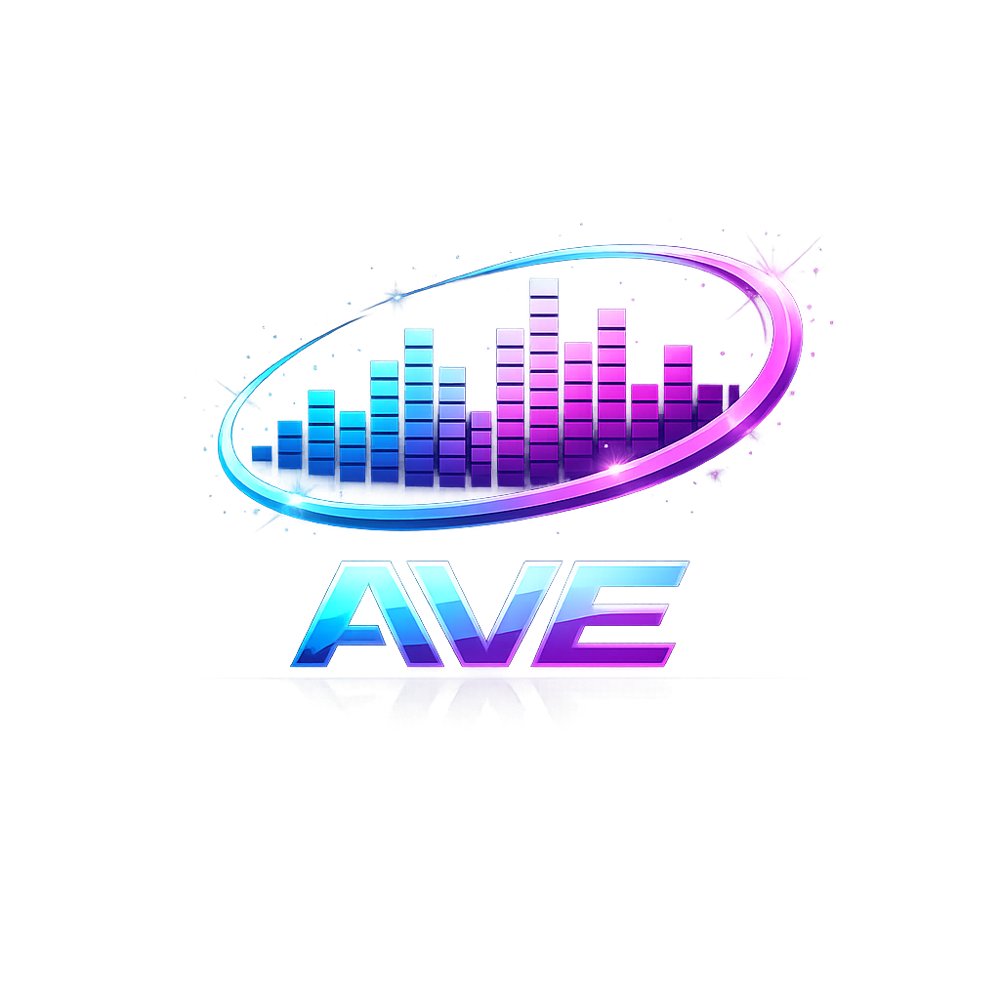

Audio Vis Effects para Firefox y la web moderna.
AVE transforma cualquier pestaña con audio en una experiencia visual inmersiva inspirada en los visualizadores clásicos tipo MilkDrop y Winamp. Incluye visualizaciones 2D y WebGL en tiempo real, efectos reactivos al audio, soporte fullscreen, visualizadores comunitarios y una arquitectura modular diseñada para expandirse.
⚡ Visuales Reactivos
Efectos sincronizados con el audio en tiempo real.
🌌 WebGL
Túneles, partículas y visuales 3D acelerados por GPU.
🧩 Modular
Arquitectura abierta para nuevos VIS de la comunidad.
🎵 Universal
Compatible con YouTube, Spotify Web y más.
 Descargar para Firefox
Descargar para Firefox